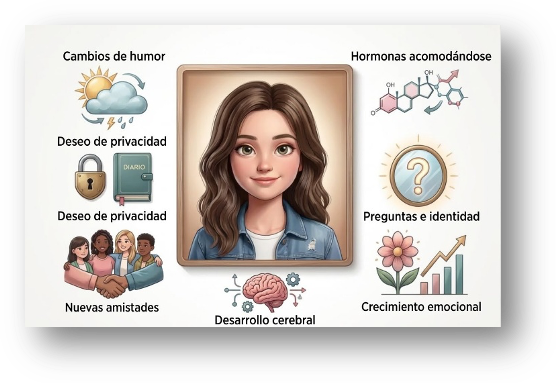
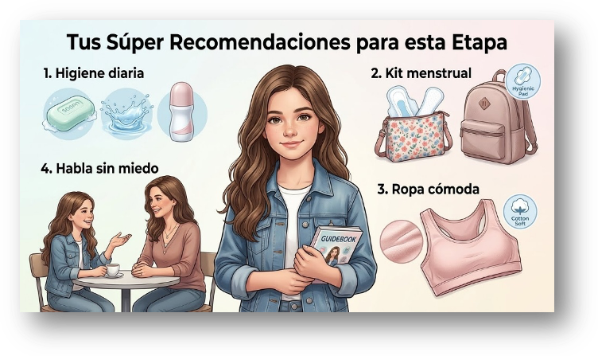

Guia oficial de tu cuerpo: El viaje de la Pubertad
¡Hola! Estás entrando a una de las etapas más emocionantes de tu vida. Tu cuerpo y tu mente están empezando a transformarse para dar el paso de la niñez a la adolescencia. A este proceso lo llamamos pubertad. No pasa de la noche a la mañana, es un viaje lleno de sorpresas y aquí te contamos todo lo que necesitas saber.

1. ¿Quién manda aquí? Los Cambios Hormonales
- El centro de mando: Imagina que tu cuerpo tiene su propio centro de control. Un buen día, una pequeña parte de tu cerebro llamada hipófisis decide que ha llegado el momento de crecer y activa el plan de desarrollo enviando unos mensajeros especiales llamados hormonas.
- Estrógenos y progesterona: Estos son los dos tipos de hormonas principales y más importantes en el cuerpo de las niñas durante esta etapa.
🚀 Su gran misión: Viajan a través del torrente sanguíneo transportando instrucciones precisas. Su trabajo es darle la orden directa a tus ovarios, a tu piel y a tus huesos de iniciar los cambios necesarios para transformarte, poco a poco, en una mujer joven.

🗺️ 2. Cambios Anatómicos: Tu Nueva Silueta
Tu cuerpo va a empezar a verse y sentirse diferente. Estos son los cambios físicos más comunes y son completamente normales:
- 👚 El "botón" mamario: El pecho empieza a crecer de forma gradual. Al principio, es completamente normal que sientas un pequeño bultito tierno, firme o un poco sensible justo debajo del pezón.
- 📐 Curvas y estatura: Tus caderas se volverán ligeramente más anchas y redondeadas. Además, experimentarás el famoso "estirón", una etapa de crecimiento rápido donde ganarás altura en poco tiempo.
- 🌱 Vello corporal: Comenzará a aparecer vello nuevo en las axilas y en el pubis (tu zona íntima). Notarás que al principio es muy delgado y claro, pero con el tiempo se volverá un poco más grueso y oscuro.
- ✨ Tu piel y el sudor: Tus glándulas se vuelven mucho más activas, produciendo más grasita y sudor. Debido a esto, es probable que aparezcan algunos granitos (acné) en el rostro o la espalda, y notarás que tu sudor ahora tiene un olor más maduro y fuerte.

🔄 3. Ovulación y Menstruación: El Ciclo de la Vida
Dentro de tu abdomen tienes dos ovarios que guardan miles de óvulos (pequeñas células parecidas a huevitos).
El Ciclo Menstrual Paso a Paso
- 🥚 La Ovulación (El inicio del viaje): Una vez al mes, tus hormonas hacen que un óvulo madure y salga del ovario. Esta pequeña célula viaja a través de un conducto llamado trompa de Falopio con dirección hacia el útero o matriz.
- 🪺 La "cunita" del útero (La preparación): Mientras el óvulo va en camino, el útero se prepara de forma natural cubriendo sus paredes internas con una capa suave, acolchada y protectora llena de sangre y nutrientes esenciales.
- 🩸 La Menstruación (Tus días): Si el óvulo no es fertilizado, el cuerpo nota que no necesitará esa protección. Por lo tanto, el útero se deshace de ese tejido suave, el cual se libera hacia el exterior a través de la vagina en forma de un sangrado ligero.
- 📅 Duración y regularidad: A este proceso lo llamamos período, menstruación o regla. Lo habitual es que el sangrado dure entre 3 y 7 días y ocurra aproximadamente cada 28 días, aunque en algunas mujeres este ciclo puede variar de forma completamente normal entre los 21 y los 35 días.
🎭 4. Cambios en el Comportamiento: Una Montaña Rusa Emocional
Las hormonas no solo cambian tu cuerpo, también afectan cómo te sientes. Es normal experimentar:
- 🌦️ Cambios de humor: "Es completamente natural experimentar emociones muy intensas en poco tiempo. Pasar de la risa al llanto o al enojo en pocos minutos es solo una señal de que tu cerebro se está adaptando a las hormonas."
- 📓 Deseo de privacidad: "Sentirás más necesidad de pasar tiempo a solas en tu habitación, escribir un diario privado o proteger tus secretos. Es un paso saludable y natural hacia tu propia independencia."
- 👭 Nuevas amistades: "Tus amigas y amigos se vuelven un pilar fundamental. Buscarás relacionarte con personas que compartan tus mismos gustos, pasatiempos y formas de ver el mundo."
- 🪞 Preguntas e identidad: "Comenzarás a cuestionarte más sobre quién eres, qué cosas te apasionan y cuál es tu lugar en el mundo. Estás descubriendo y moldeando tu propia personalidad.

🌟 5. Tus Súper Recomendaciones para esta Etapa
Para que vivas este viaje con total confianza, toma en cuenta estos consejos:
- 🧼 1. Higiene diaria: Báñate todos los días y adopta el uso de un desodorante suave. No olvides lavar tu rostro por las mañanas y por las noches con agua y jabón neutro para mantener tu piel limpia y libre de grasa.
- 🎒 2. Tu kit menstrual de emergencia: Prepara un estuche o una cartera para llevar siempre en tu mochila escolar. Incluye toallas higiénicas o pantiprotectores para que ningún cambio imprevisto te tome por sorpresa fuera de casa.
- 👚 3. Ropa cómoda para el día a día: Durante el crecimiento, el pecho se vuelve muy sensible. Usar un top deportivo o un brasier suave fabricado de algodón te dará todo el soporte necesario sin lastimarte ni apretar.
- 🗣️ 4. Habla sin miedo ni vergüenza: Sentir dudas, temores o tristeza es parte del proceso. Comparte todo lo que experimentas con tu mamá, tu papá, una tía o un médico de confianza; recuerda que ellos ya recorrieron este mismo camino

Guadalupe Posada Estrada
Ginecóloga
Magister Epidemiología
Colposcopia y Patología cervical
UPB. CES.FUCS
Poniendo límites y aprendiendo a decir que no
¿Crees que a veces hay días en los que simplemente no tienes fuerza de voluntad para nada, y aun así las personas te hacen sentir que debes hacer algo? Quizás te pidieron que ayudaras en la casa, que termines una tarea o que salieras con tus amigas, y tú solo querías quedarte quieta, en silencio, sin hacer nada.
Esto es algo que se llega a ver demasiado en cualquier momento de la vida, pero uno de los tiempos más difíciles y en los que está presente este fenómeno es en la preadolescencia, en las edades en las que ustedes se encuentran. La pubertad empieza en la mayoría de las niñas entre los 8 y los 13 años, y es un proceso que no ocurre de golpe, sino de forma progresiva. Por eso es normal que estés viviendo muchos cambios al mismo tiempo, en tu cuerpo, en tu cabeza y en tus emociones.
Ese sentimiento de no querer hacer nada a veces llega con todos los cambios que sus cuerpos están experimentando, tal vez algunos días te llegues a sentir muy triste,muy feliz o simplemente muy enojada, y todo eso en una sola semana o un solo día. Durante la pubertad es común tener emociones intensas que antes no habías sentido, y también sentirte ansiosa por cómo se ve tu cuerpo mientras cambia. Nada está mal contigo por sentirte así. Los cambios de humor, los estirones y el acné forman parte del crecimiento, y todo el mundo pasa por ello, aunque no siempre al mismo ritmo.
Hay otras cosas que también pesan en tu energía. Una es el sueño: dormir poco reduce la concentración, altera el estado de ánimo y puede afectar a tus amistades y la relación con tus hermanos. Otra es la menstruación. Algunas niñas notan tristeza, cambios de humor, nerviosismo, ansiedad y cansancio antes y durante el período. Así que si un día te sientes sin fuerzas, puede haber una razón, y no es que seas "floja" ni "dramática".
El problema aparece cuando los demás no lo entienden. En esos días en los que sientes que ni te puedes levantar de la cama, algunas personas esperan que hagas incluso más de lo que sueles hacer. Si les dices que no puedes o que no quieres, lo más probable es que insistan hasta que cedas, y muchas veces lo hacen sin mala intención, simplemente no ven lo que tú estás sintiendo.
Pero esto no es sano a largo plazo. Si a medida que creces piensas que siempre es tu deber hacer lo que otros te pidan, en lo personal o en lo escolar, cada vez será más difícil decir que no cuando de verdad no quieres hacer algo. Y esa dificultad no desaparece al cumplir 18 años: puede acompañarte en tu vida adulta, en tus relaciones, en tu trabajo y en tus decisiones. Aprender a poner límites desde ahora es una forma de cuidarte.
¿Qué puedes hacer en esos días?
- Ponle nombre a lo que sientes. Decir "hoy estoy muy cansada y sin energía" ayuda a que los demás te entiendan y a que tú misma te comprendas. Es mejor que quedarte callada y sentirte mal por dentro.
- Usa herramientas para las emociones fuertes. Se recomienda respirar, meditar, hacer ejercicio, escribir o dibujar. No tienes que hacerlas todas ni hacerlas perfectas. A veces, escribir tres líneas sobre cómo te sientes o respirar profundamente por un minuto ya alivia.
- Cuida lo básico. Dormir lo suficiente puede marcar la diferencia, porque la falta de sueño empeora el ánimo.
- Aprende a decir que no con respeto. Por ejemplo: "Hoy no tengo energía para eso, ¿podemos hacerlo mañana?" o "Ahora necesito un rato para mí, después te ayudo". Poner un límite no es ser grosera ni perezosa, es cuidarte. Y las personas que te quieren pueden aprender a respetarlo.
- Habla con alguien de confianza. Con tantos cambios, es fácil que los niños se sientan inseguros y solos. Tu mamá, tu papá, una profesora, una tía o una amiga pueden escucharte, y hablar con ellos ayuda mucho. También cuida de dónde sacas información: no todo lo que se dice sobre la pubertad viene de fuentes confiables, así que pregunta a adultos de confianza si tienes dudas.
- Pide ayuda si dura mucho. Si la tristeza o la falta de ganas duran semanas, o no te dejan disfrutar de lo que antes te gustaba, cuéntaselo a un adulto de confianza o a un médico. No es exagerar, y hay apoyo para eso.
Y si eres tú quien tiene a alguien al lado con un día difícil, recuerda esto: a veces lo mejor que puedes hacer es preguntar "¿cómo estás?" y escuchar, sin presionar.
Para terminar: descansar no es rendirse, tener un mal día no te hace menos, y tienes derecho a decir "hoy no puedo".